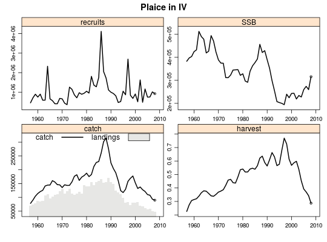
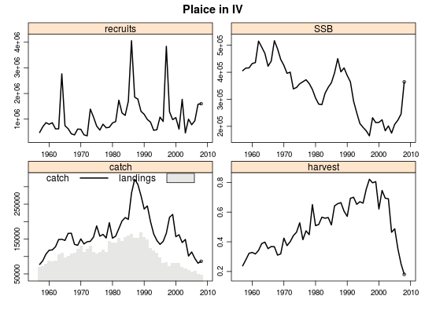
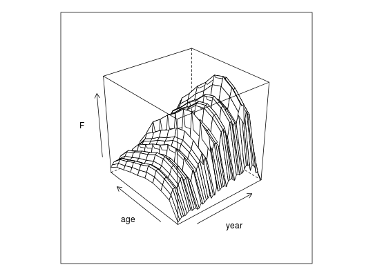
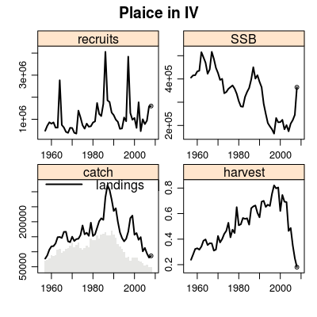

Statistical catch-at-age method
Usage
sca(stock, indices, ...)
Arguments
- stock
- an
FLStockobject - indices
- an
FLIndicesobject - fmodel
- a formula object depicting the model for log fishing mortality at age
- qmodel
- a list of formula objects depicting the models for log survey catchability at age
- srmodel
- a formula object depicting the model for log recruitment
- fit
- character with type of fit: 'MP' or 'assessment'; the former does not require the hessian to be computed, while the latter does.
Value
-
an
a4aFit or a4aFitSA object with the fit results.
Description
User interface to the statistical catch-at-age method of the a4a stock assessment framework.
Examples
data(ple4) data(ple4.index) # fit using the default submodels fit1 <- sca(ple4, FLIndices(ple4.index)) plot(ple4 + fit1)
# see default submodels (set through automated procedure) sca(ple4, FLIndices(ple4.index), fit='assessment')a4a model fit for: Plaice in IV Call: .local(stock = stock, indices = indices, fmodel = ..1, qmodel = ..2, srmodel = ..3, n1model = ..4, vmodel = ..5, fit = ..6) Time used: Pre-processing Running a4a Post-processing Total 0.3349648 3.2114854 0.1091063 3.6555564 Submodels: fmodel: ~te(age, year, k = c(5, 26), bs = "tp") srmodel: ~factor(year) n1model: ~factor(age) qmodel: BTS-Isis: ~s(age, k = 5) vmodel: catch: ~s(age, k = 3) BTS-Isis: ~1# fishing mortality by age and year (separable) fit2 <- sca(ple4, FLIndices(ple4.index), fmodel=~factor(age) + factor(year)) plot(ple4 + fit2)
wireframe(data~year*age, data=harvest(fit2), zlab="F")
# fit2 + catcability as a smoother by age without year trend fit3 <- sca(ple4, FLIndices(ple4.index), fmodel=~factor(age) + factor(year), qmodel=list(~s(age, k=4))) plot(ple4 + fit3)
# fit3 + srmodel as a smoother by year fit4 <- sca(ple4, FLIndices(ple4.index), fmodel=~factor(age) + factor(year), qmodel=list(~s(age, k=4)), srmodel=~s(year, k=45)) plot(ple4 + fit4)
AIC(fit1, fit2, fit3, fit4)df AIC fit1 200 269.4740 fit2 131 255.7221 fit3 130 254.6063 fit4 123 508.3260BIC(fit1, fit2, fit3, fit4)df BIC fit1 200 1182.5270 fit2 131 853.7718 fit3 130 848.0908 fit4 123 1069.8536